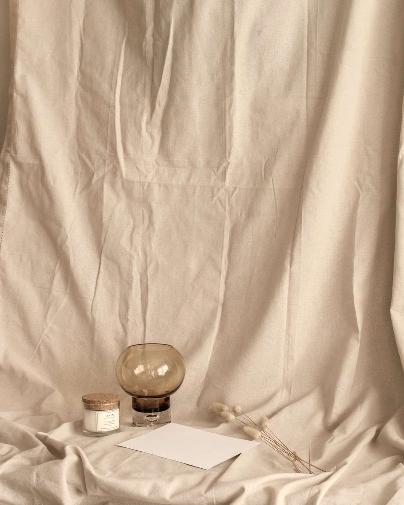
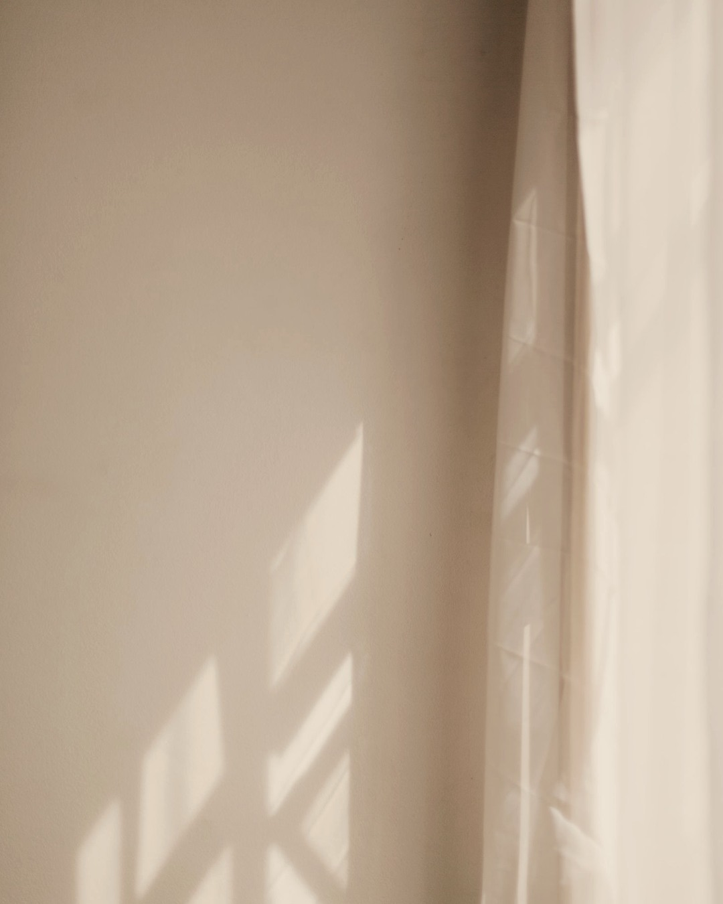
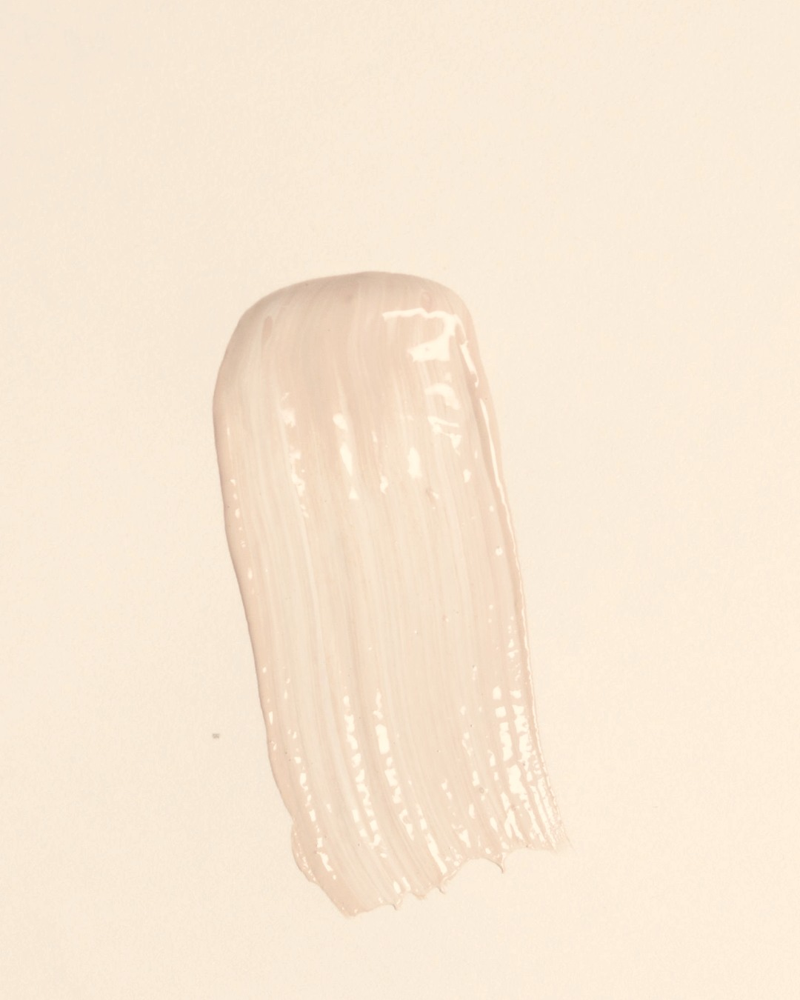
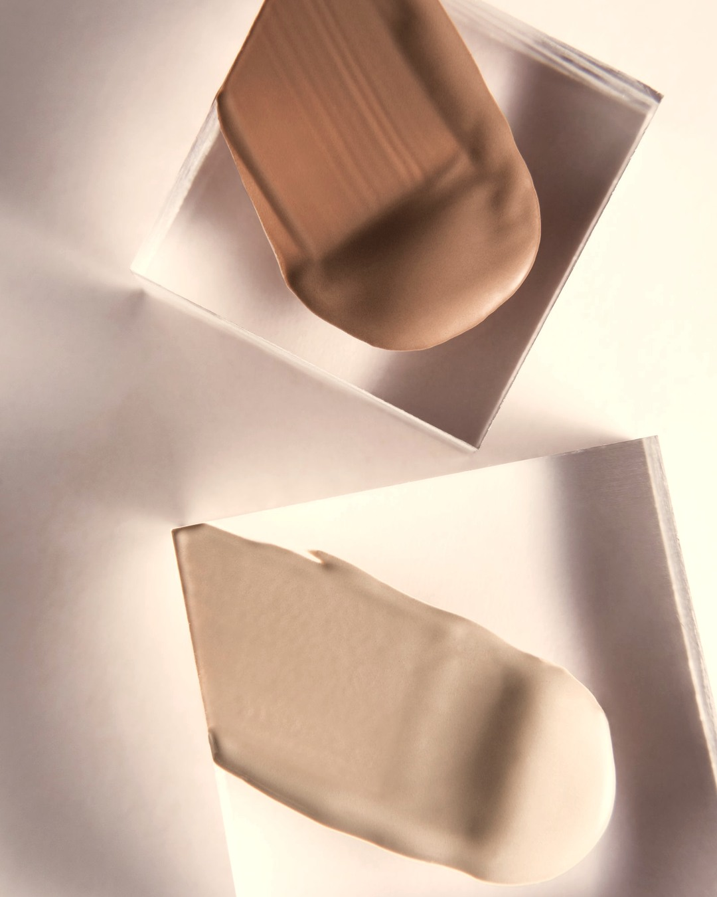
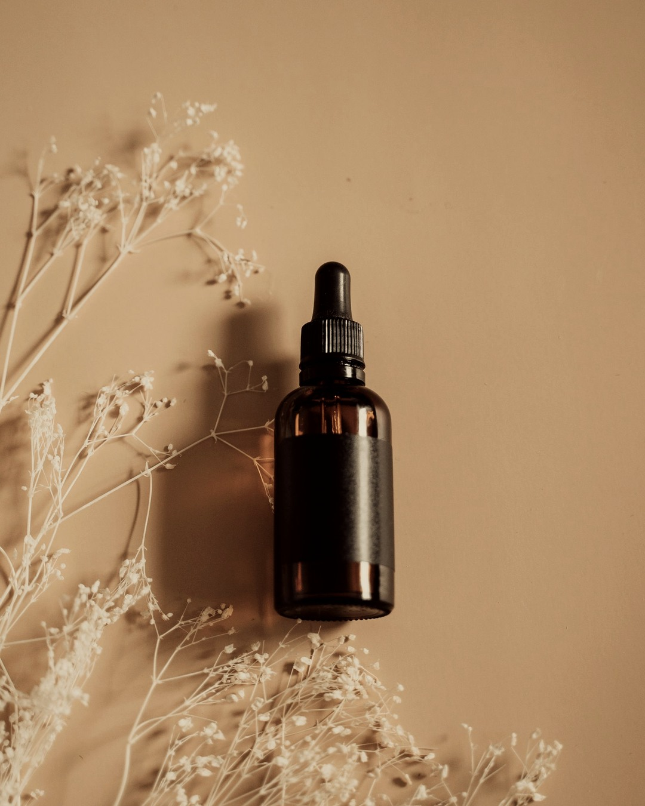
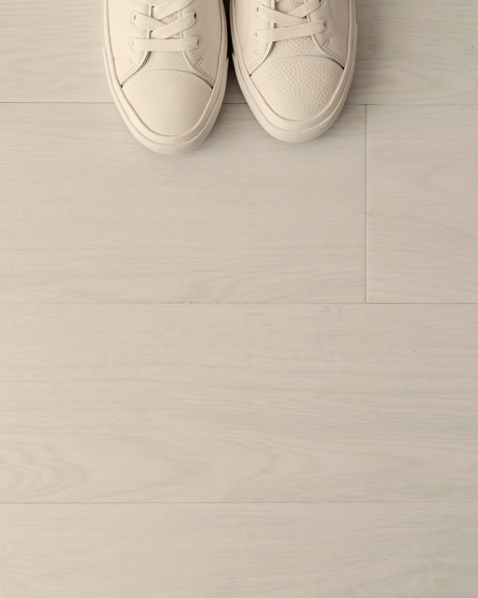
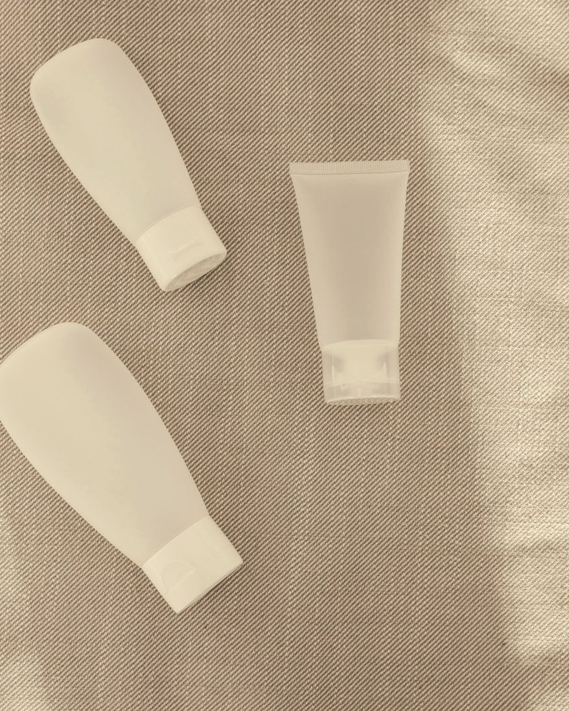

오래 사는 건 이미 정해졌어요.
어떻게 나이 들지가 남았습니다.
성분으로 읽는 다섯 가지 기준

겉으로 보이는 피부 노화의 큰 몫은
나이보다 누적된 자외선 탓으로 알려져 있어요.
흐린 날과 실내 창가, 5분 외출도 전부 더해집니다.
성분징크옥사이드 · 티타늄디옥사이드

나이가 들면 피부가 얇아지고
유분이 줄어 수분이 새어 나갑니다.
장벽이 무너지면 주름도 색소도 다 빨라져요.
성분세라마이드 · 판테놀 · 히알루론산

한 번 자리 잡은 색소는
바르는 것만으로 잘 빠지지 않아요.
목표는 새로 만들어지는 속도를 늦추는 것입니다.
성분나이아신아마이드 · 트라넥사믹애시드

진피 콜라겐은 20대 후반부터 해마다 약 1%씩
줄어든다고 알려져 있어요.
목표는 되돌리기가 아니라 감속이에요.
성분레티놀 · 펩타이드 · 비타민C

근육은 30대 이후 10년마다 3~8%씩 줄어듭니다.
그런데 피부와 달리 근육은
지금 시작해도 다시 늘어나요.
영양단백질 · 비타민D · 오메가3

비싼 기능성보다 자외선 차단과 장벽이 먼저예요.
이 순서만 지켜도 절반은 됩니다.
성분과 이유는 캡션에 정리해 뒀어요 ↓
당신이 푸르렀던 그 시절로
RE:BEAUTY
RIVEA